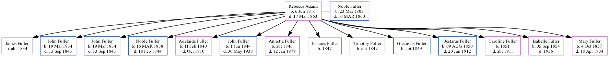

Rebecca Fuller (née Adams) 1816 - 1863
[ Home ] | [ Surnames Index ] | [ Family History ] was born in NY on Jun 6, 1816 and married Noble Fuller (with whom she had 14 children: James, John Marcus, John Marcus, Noble Adams, Adelaide, John Virgil Adams, Annetta, Juslares, Timothy, Gustavus, Jestarus Noble Timothy, Caroline Lesuer, Isabelle M and Mary Jane Josephine) in Erie County, PA in 1834.
She died on Mar 17, 1863 in Columbus Junction, Louisa, Iowa.
Children
- James was born c. 1834
- John Marcus was born on Mar 19, 1834
- John Marcus was born on Mar 19, 1834
- Noble Adams was born on Mar 16, 1838
- Adelaide was born on Feb 11, 1840
- John Virgil Adams was born on Jun 1, 1844
- Annetta was born c. 1846
- Juslares was born in 1847
- Timothy was born c. 1849
- Gustavus was born c. 1849
- Jestarus Noble Timothy was born on Aug 9, 1850
- Caroline Lesuer was born in 1851
- Isabelle M was born on Sep 5, 1854
- Mary Jane Josephine was born on Oct 4, 1857
Family Tree
Data (GEDCOM) maintained by Jay Weston Hannah, Omaha, Nebraska, USA.
Website generated by ged2site. Last updated on Jun 18, 2024.